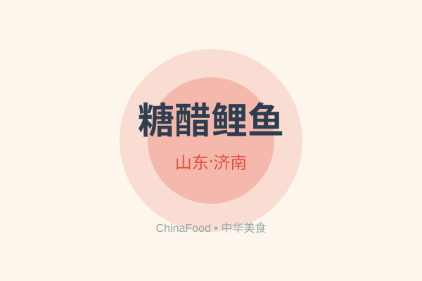

Shandong Cuisine — Regional Food Guide
A comprehensive guide to the authentic flavors, signature dishes, and culinary traditions of Shandong.
Signature Dishes of Shandong

Sweet and Sour Carp
Yellow River carp fried golden with tail raised high, draped in an amber sweet-and-sour sauce.
Braised Intestines in Nine Turns
Intestines pass through blanching, boiling, layering, and braising; the result is date-red, glossy, shaped in looping coils.
Cattail Shoots in Milk Broth
Tender hearts of Daming Lake cattail shoots simmered in milk-white broth, thick and mellow as fresh cream.
Food Culture of Shandong
The cuisine of Shandong reflects its geography, climate, and rich cultural heritage. Local ingredients, traditional cooking methods, and centuries of culinary evolution have created a distinctive food culture that is recognized throughout China and the world.